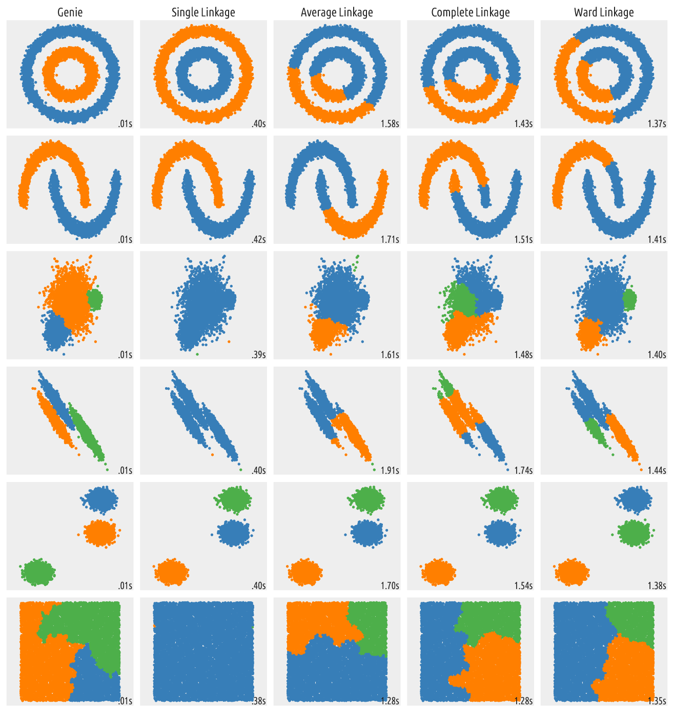

Comparing Different Algorithms on Toy Datasets¶
There’s a nice example at the scikit-learn website that shows the characteristics of different hierarchical clustering methods on 2D toy datasets. Below we re-run this illustration on larger data and with the Genie algorithm in the game.
import time
import warnings
import numpy as np
import matplotlib.pyplot as plt
from sklearn import cluster, datasets
from sklearn.preprocessing import StandardScaler
from itertools import cycle, islice
import genieclust
np.random.seed(0)
First, we generate the datasets. Note that in the original
script,
n_samples was set to 1500.
n_samples = 10000
noisy_circles = datasets.make_circles(n_samples=n_samples, factor=.5,
noise=.05)
noisy_moons = datasets.make_moons(n_samples=n_samples, noise=.05)
blobs = datasets.make_blobs(n_samples=n_samples, random_state=8)
no_structure = np.random.rand(n_samples, 2), None
# Anisotropically distributed data
random_state = 170
X, y = datasets.make_blobs(n_samples=n_samples, random_state=random_state)
transformation = [[0.6, -0.6], [-0.4, 0.8]]
X_aniso = np.dot(X, transformation)
aniso = (X_aniso, y)
# blobs with varied variances
varied = datasets.make_blobs(n_samples=n_samples,
cluster_std=[1.0, 2.5, 0.5],
random_state=random_state)
Then we run the clustering procedures and plot the results.
# Set up cluster parameters
plt.figure(figsize=(9 * 1.3 + 2, 14.5))
plt.subplots_adjust(left=.02, right=.98, bottom=.001, top=.96, wspace=.05,
hspace=.01)
plot_num = 1
default_base = {'n_neighbors': 10,
'n_clusters': 3}
datasets = [
(noisy_circles, {'n_clusters': 2}),
(noisy_moons, {'n_clusters': 2}),
(varied, {'n_neighbors': 2}),
(aniso, {'n_neighbors': 2}),
(blobs, {}),
(no_structure, {})]
for i_dataset, (dataset, algo_params) in enumerate(datasets):
# update parameters with dataset-specific values
params = default_base.copy()
params.update(algo_params)
X, y = dataset
# normalize dataset for easier parameter selection
X = StandardScaler().fit_transform(X)
# ============
# Create cluster objects
# ============
ward = cluster.AgglomerativeClustering(
n_clusters=params['n_clusters'], linkage='ward')
complete = cluster.AgglomerativeClustering(
n_clusters=params['n_clusters'], linkage='complete')
average = cluster.AgglomerativeClustering(
n_clusters=params['n_clusters'], linkage='average')
single = cluster.AgglomerativeClustering(
n_clusters=params['n_clusters'], linkage='single')
genie = genieclust.Genie(n_clusters=params['n_clusters'])
clustering_algorithms = (
('Single Linkage', single),
('Average Linkage', average),
('Complete Linkage', complete),
('Ward Linkage', ward),
('Genie', genie),
)
for name, algorithm in clustering_algorithms:
t0 = time.time()
# catch warnings related to kneighbors_graph
with warnings.catch_warnings():
warnings.filterwarnings(
"ignore",
message="the number of connected components of the " +
"connectivity matrix is [0-9]{1,2}" +
" > 1. Completing it to avoid stopping the tree early.",
category=UserWarning)
algorithm.fit(X)
t1 = time.time()
if hasattr(algorithm, 'labels_'):
y_pred = algorithm.labels_.astype(np.int)
else:
y_pred = algorithm.predict(X)
plt.subplot(len(datasets), len(clustering_algorithms), plot_num)
if i_dataset == 0:
plt.title(name, size=18)
colors = np.array(list(islice(cycle(['#377eb8', '#ff7f00', '#4daf4a',
'#f781bf', '#a65628', '#984ea3',
'#999999', '#e41a1c', '#dede00']),
int(max(y_pred) + 1))))
plt.scatter(X[:, 0], X[:, 1], s=10, color=colors[y_pred])
plt.xlim(-2.5, 2.5)
plt.ylim(-2.5, 2.5)
plt.xticks(())
plt.yticks(())
plt.text(.99, .01, ('%.2fs' % (t1 - t0)).lstrip('0'),
transform=plt.gca().transAxes, size=15,
horizontalalignment='right')
plot_num += 1
plt.show()

Outputs of different clustering algorithms¶
It seems that the out-of-the-box Genie algorithm not only generates the most meaningful partitions but also it’s the fastest.